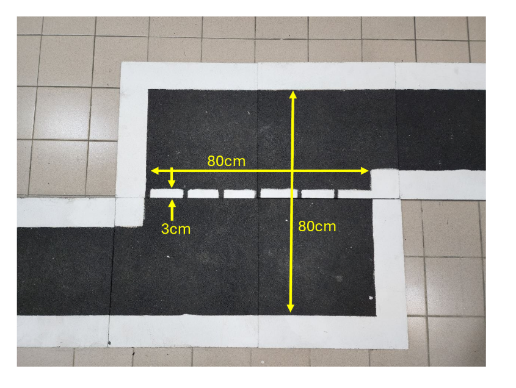
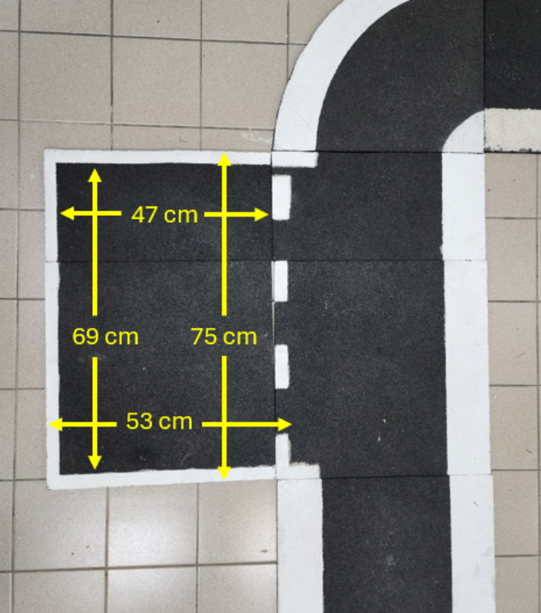
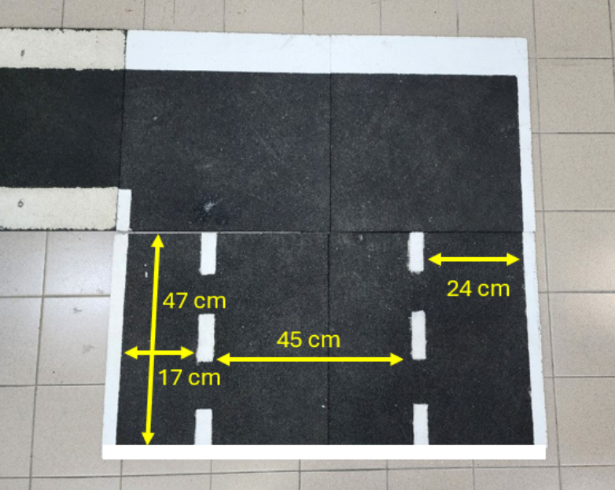
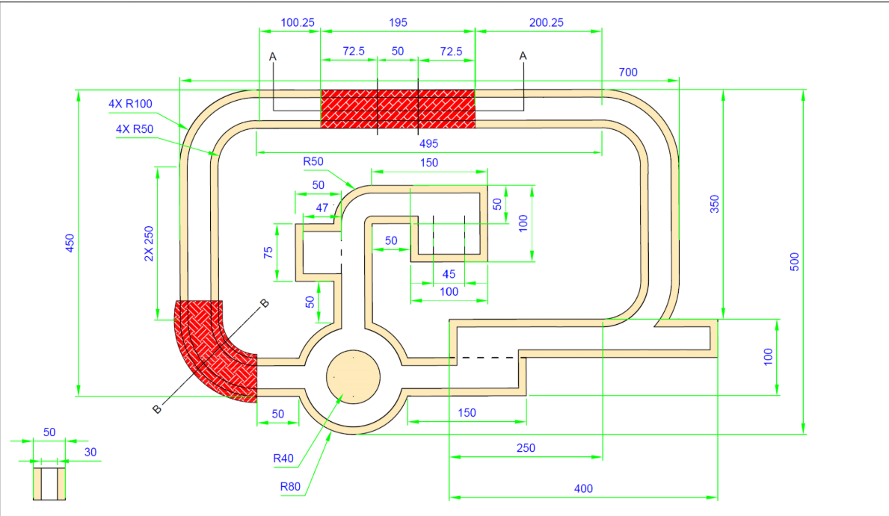
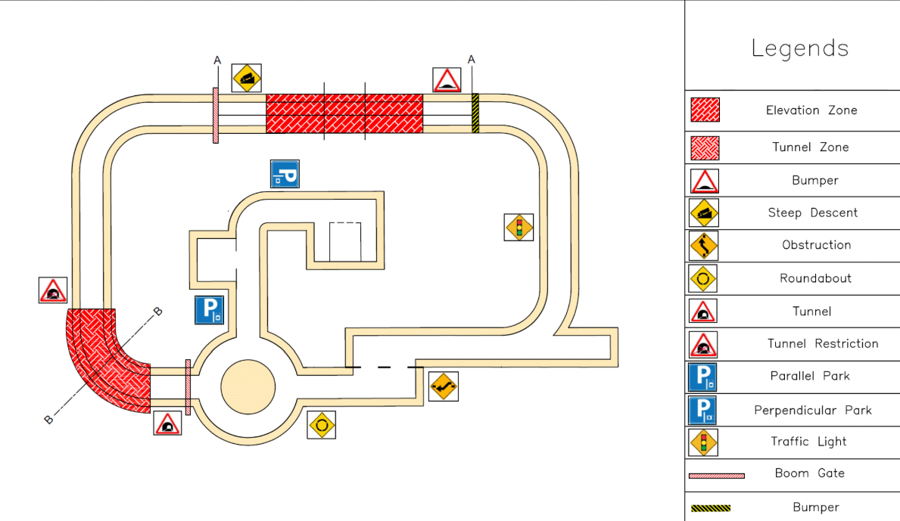
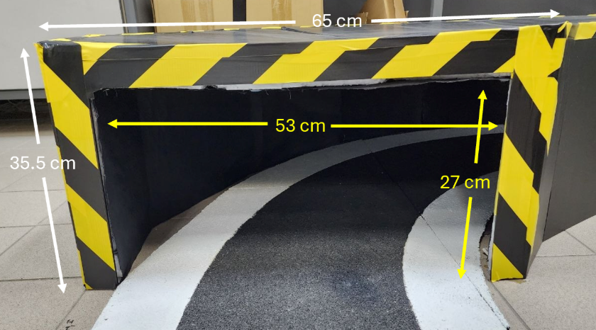
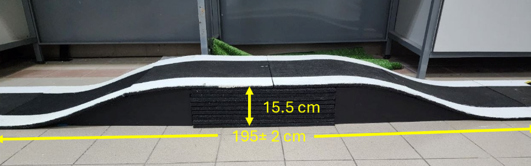
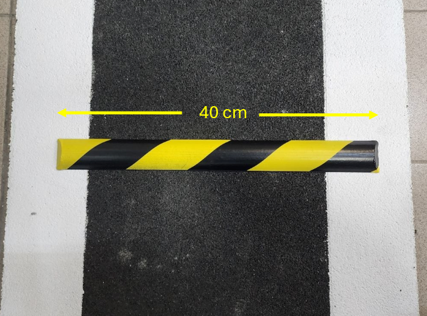
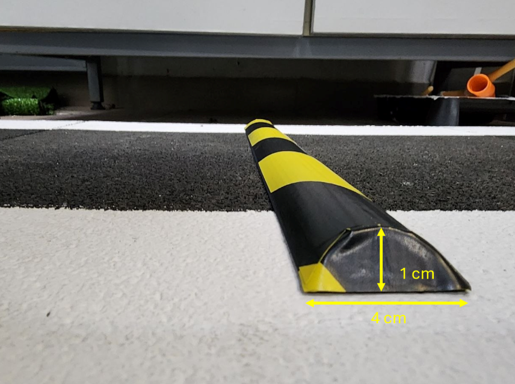

This package contains the complete simulator. You do not need to install Python, Node.js, ROS, MATLAB or a code editor to run it.
Open the simulatorDECISION — Try strict lane containment first. If no strict trajectory works, evaluate a separate set with the selected paint allowance. If motion planning still fails, stop briefly, compute a reverse-and-forward route, then execute it.
The allowance is measured beyond the original black-road boundary, not an enlargement of the car or a change to the rendered map. A 5 mm footprint padding remains in planning, so nominal body allowance is slightly more conservative than the slider value. The original boundary is still assessed. Crossing painted course boundaries and reversing on a one-way route outside parking are training overrides, not newly established competition permissions.
Recovery searches analytic car-like trajectories to up to five future route poses. A valid recovery starts in reverse, has one stopped change to forward, plans at most 20 cm reverse by default, and drives at 3 cm/s. Adjust the planned reverse limit in Vehicle & sensors. It checks the body along the path and requires recent rear road evidence. It does not simply reverse blindly and hope a path appears.
Hard limits remain: emergency stop, stale motion/camera data, unreliable local pose, an unresolved route-identity conflict, physical obstacles, traffic/gate holds and the command watchdog can stop recovery. If no checked route exists, it rescans every 2 seconds; it resumes forward planning if that becomes feasible. Three recovery attempts at the same location are the limit. Disabling recovery commands a brief stop before normal control resumes.
DECISION — Cameras and odometry guide precise motion; UWB continuously supports coarse course location. A noisy UWB fix can move the violet global marker, but it cannot jump the yellow steering pose.
| Colour | Meaning |
|---|---|
| Green | Actual pose, used only for assessment and sensor rendering. |
| Yellow | Camera/odometry local navigation pose, displayed in prior-map coordinates. |
| Violet | Coarse global estimate, including uncertainty-weighted UWB. |
| Orange | Raw UWB measurements. |
| Cyan in planner | Observed corridor centreline samples. |
| Grey / dashed grey / blue | Evaluated / rejected / selected local trajectory. |
Grey driving candidates explore lateral alternatives around the selected route branch; they do not enumerate all roundabout exits. The mission route chooses the branch. The local planner checks the opening and the car's feasible motion.
The number is Gaussian standard deviation per horizontal axis, not a maximum position error. The simulation includes random noise; sustained UWB bias, multipath and radio propagation are not modelled. UWB uses a variance-dependent gain and an innovation gate in a separate global estimate. The local lateral uncertainty indicator is a heuristic, not a calibrated 2-D covariance or safety certificate.
| Feature | Implemented geometry |
|---|---|
| Challenge 1 | 80 × 80 cm open transition area, with a 3 cm dashed divider. The entering and exiting lanes retain your measured 30 cm width. |
| Parallel bay | 69 × 47 cm clear interior; 75 × 53 cm outer border dimensions; 3 cm border derived from the 6 cm overall difference. Dashed mouth opens onto the road. |
| Perpendicular bay | 47 cm depth × 45 cm between the marked sides, with separate 17 cm and 24 cm side spaces. Its entrance connects directly to the upper road. |
Dash lengths/gaps and the perpendicular dashed-line width are drawing assumptions; the latter uses 3 cm. The supplied dimensions are centralised in PHOTO_DIMENSIONS in src/core.js. Overall placement follows the course drawing and still needs a physical survey.



Alternatively, double-click START_WINDOWS.cmd. It only opens index.html in your default browser. It does not install software, request administrator access or change Windows settings.
On macOS: open Downloads in Finder, double-click the ZIP to extract it, then right-click index.html → Open With → Google Chrome. Keep the whole extracted folder together.
Each panel has its own dropdown at the top. Click it and choose a view. Recommended combinations:
| Left panel | Right panel | What you learn |
|---|---|---|
| Three camera feeds | Warp + stitch + road mask | What the cameras see, which ground is visible and how connected road is extracted. |
| Actual vs estimated pose | Local planner | Localisation error and the start-to-goal path changing as the car moves. |
| Local memory + LiDAR | Assessment graphs | How old observations persist and how uncertainty, clearance and tracking error behave. |
| 3D environment | Actual vs estimated pose | A clear overview of both missions. |
Green square = true rear-axle pose. Yellow square = estimated rear-axle pose. Outlines show the 30 × 19.2 cm nominal vehicle envelope. Arrows show heading. Drag in the 3D panel to orbit, scroll to zoom, or click Follow car.
The value is the radius traced by the midpoint of the rear axle—not the outside tyre circle or outside body circle. A larger value means the car cannot turn as tightly. A failed route search is shown as a planning error.
| Parameter | Value | Status |
|---|---|---|
| Bumper-to-bumper length | 30 cm | User measured |
| Outside tyre width | 19.2 cm | User measured; corrected from earlier axle-track interpretation |
| Wheelbase | 21.6 cm | User measured |
| Tyre radius / width | 33 / 25 mm | User supplied |
| Wheel centre spacing | 16.7 cm | Derived: 19.2 − 2.5 cm |
| Mass / minimum radius | 2 kg / 40 cm | User-authorised assumptions; radius editable |
| Rear overhang | 4.2 cm | Provisional equal split of the 8.4 cm combined overhang |
| Motor / servo time constants | 180 / 120 ms | Provisional first-order responses, not measured |
| Motor force limit | 8 N | Explicit simplified plant assumption |
| Tunnel clear opening | 53 cm wide × 27 cm high | Supplied photo; 65 × 35.5 cm outer envelope |
| Ramp | 195 cm long × 15.5 cm high | Supplied photo; drawing splits 72.5 + 50 + 72.5 cm. Smooth profile assumed. |
| Bump | 40 cm across × 4 cm along travel × 1 cm high | Supplied photos. Rounded cross-section assumed. |
Coordinates are relative to the rear-axle midpoint: x forward, y left, z above the ground. These are a starting design, not measured calibration or a claim of optimality.
| Camera | x / y / z | Aiming |
|---|---|---|
| Front | 22.5 / 0 / 18 cm | Forward; 25° down. Refined from 35° to retain the traffic-light view. |
| Left rear-quarter | 1.5 / +7.1 / 15 cm | 135° left of forward; 50° down. |
| Right rear-quarter | 1.5 / −7.1 / 15 cm | 135° right of forward; 50° down. |
The default horizontal FOV is a provisional 100° for each camera. It is not a specification claim about your Orbbec camera or unselected side cameras. Enter measured FOV and mounts before treating the coverage as representative. Black/blue gaps in the mosaic remain unobserved; memory does not turn them into fresh measurements.
The simulation includes the proposed two extra cameras and UWB. They were not installed on the real bot in the supplied project notes. The simulation's LiDAR is lowered to 22 cm; your actual overheight mast remains a confirmed issue to fix.
validation/v4-20cm-run.csv is a recorded assessment of the tested defaults, not a movement replay used by the controller.Controlled faults: “Drop UWB updates” removes coarse UWB corrections while camera-guided local motion continues; “Freeze all camera frames” eventually triggers stale-vision hold; “Stop command requests” triggers the 200 ms watchdog. “Emergency stop” has priority over every motion source. Release the checkbox/button to restore the input.
Scope: this is prior-map-aided local vision, not map-free navigation or a complete visual SLAM/EKF system. The starting pose and route are known. Straight boundaries constrain lateral position; along-road motion still depends on odometry until distinctive boundary geometry is visible. IMU heading is simulated as a noisy absolute orientation. Ground projection uses provisional pinhole calibration and a planar local ground assumption. Registration is disabled on steep pitch, and frozen during parking to keep the selected bay frame stable. LiDAR remains a tunnel-clearance sensor, not a localisation source.
The controller does not read the true pose. The sensor simulator creates noisy UWB positions, encoder speed and IMU orientation. The estimator propagates continuous wheel/IMU odometry. Camera road-to-paint transitions are matched to nearby prior-map boundaries to correct local drift. UWB updates a separate coarse global estimate; it never writes the local steering transform. The true state is used to render sensors and assess errors.
All three camera images are rendered from the 3D scene. Pixel values are projected through calibrated pinhole mappings into a metric ground mosaic. Road classification and four-connected growth run on these pixels. Recently observed road and tape cells are stored in the odometry frame with timestamps and accumulated wheel distance. Display memory fades over 25 s; driving evidence is limited to 2–3 s and a travel-dependent uncertainty budget. Parking can retain previously seen bay edges for up to 24 s while completing the short manoeuvre. Remembered observations do not become new independent measurements. A prior-map corridor supplies route topology and feasible corner geometry. Cross-sections of observed road/paint locate paired lane boundaries and their centre. The local reference receives a bounded camera-derived lateral correction; it retains the nominal body-feasible path offset on curves. Nine strict bicycle rollouts (plus nine allowance rollouts only when needed) then check the prior footprint, sampled image/memory footprint evidence and clearance. Cyan centreline samples are measured from images; blue is the selected vehicle trajectory, which need not lie on the geometric centreline. The steering state used for prediction is propagated from the commanded angle using the assumed response model; no steering-angle sensor is added to the hardware list.
Parking uses the current estimated pose and camera-supported bay edges matched near the prior bay. Twelve Reeds–Shepp base families, reflection and time reversal generate analytic candidates. If a direct connection is blocked, a bounded forward/reverse search uses Reeds–Shepp connections near the goal. Candidate endpoints are verified by independent bicycle integration. Full nominal body footprints are sampled at centimetre or finer spacing. This is not a formal continuous-collision certificate.
The command owner expires requests after 200 ms. A single rear-drive speed model, finite steering response and Ackermann geometry integrate the vehicle motion. The terrain supplies wheel contact heights, pitch and roll. Rapier checks 3D obstacle contacts. Mass enters longitudinal acceleration and slope-force demand. This is a behaviour and geometry simulator, not a calibrated suspension, tyre-slip, tipping or braking-distance model. Steering-dependent tyre envelope and suspension measurements are still needed for physical certification. The Rapier vehicle collider covers the nominal body; mast and camera housings are visual geometry, so tunnel roof clearance is not physically certified by this collision model.
Traffic-light and gate recognition is ideal when the object is in a simulated camera's view and not occluded. Signal changes happen in the environment. Controller code releases holds only on observations, not a countdown. Ramp/bump speed zones and roundabout routing currently come from the prior map; this prototype does not implement separate visual sign-trigger logic for every challenge.
The course uses the dimensioned rulebook drawing and the four supplied obstacle photos. The main outer width defaults to 700 cm and vertical extent to 500 cm. The right spur extends beyond the 700 cm main loop. Junction tapers and absolute positions are reconstructed from the drawing; they are not a surveyed CAD model. The new photos resolve the parallel bay as 69 × 47 cm clear interior and 75 × 53 cm outer dimensions, and replace the lower connector with an 80 × 80 cm transition area.
All course coordinates live in src/core.js, not in animation keyframes. The course length/width controls scale the reconstruction, while lane width stays 30 cm. The simulator starts with a synthetic surveyed map and known anchor frame. It does not claim to have performed your real manual calibration lap. Before competition, measure the course landmarks/anchor positions and replace the synthetic map alignment and sensor errors with real calibration results.






index.html, app.bundle.js and style.css together.You can use the simulator without this section. To edit algorithms later, install Node.js LTS, open a terminal in the extracted folder, run npm ci, then node build.mjs after changes. Refresh the browser. npm test runs the mathematical and control checks.
| File | Responsibility |
|---|---|
| src/core.js | Named parameters, road geometry, footprint tests and directed mission path search |
| src/reeds-shepp.js | 48 analytic-family evaluations and independent endpoint validation |
| src/recovery.js | Paint envelope, observed-rear checks, obstacle checks, reverse-first analytic search and recovery state machine |
| src/guidance.js | Image-derived corridor centres, timestamp-correct evidence queries, memory limits and branch agreement |
| src/local-planner.js | Nine bicycle rollouts, footprint rejection and cost-based selection |
| src/vehicle.js | Plant, noisy sensors, pose estimator, memory, tracking and command owner |
| src/scene.js | Three.js environment, cameras, LiDAR ray casts and Rapier contacts |
| src/perception.js | Warped/stitched camera pixels, masks and region growth |
| src/app.js | Two-mission state machine, live planning, dashboard and CSV export |
| VALIDATION.md | Actual checks performed and their results |
Third-party licences and source attribution are included in THIRD_PARTY_NOTICES.txt.